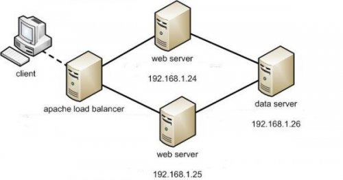
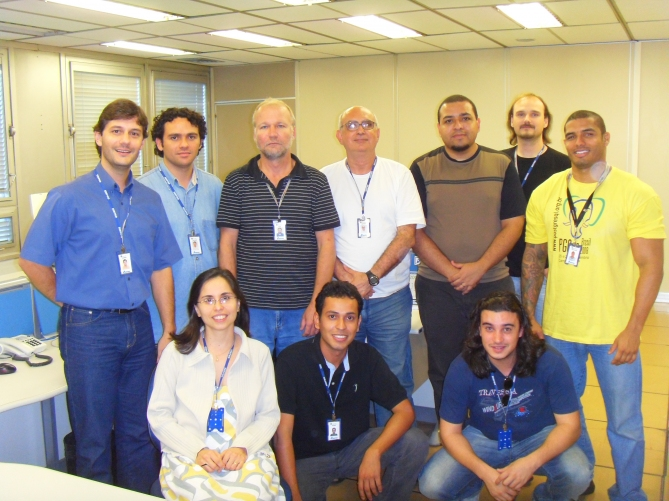

Um guerreiro da luz muitas vezes desanima.Acha que nada tem a emoção que ele esperava despertar. Muitas tardes e noites é obrigado a ficar sustentando uma posição conquistada, sem que nenhum acontecimento novo venha lhe devolver o entusiasmo. Seus amigos comentam: “talvez sua luta já tenha terminado.” O guerreiro sente dor e confusão ao escutar estes comentários porque sabe que não chegou onde queria. Mas é teimoso, e não abandona o que decidiu fazer. Então, quando menos espera, uma nova porta se abre.
Pensamentos… 07/04/2010
Posted by joaocosme em abril 7, 2010
Enviado em geral | Deixar um comentário »
HA em Postgresql = Warm Stand By + HeartBeat + HAPM
Posted by joaocosme em outubro 30, 2009
Prefácio hehehe
Ja faz um bom tempo que eu gostaria de postar novamente, ando muito ocupado não sei se vocês sabem, mas estou no SERPRO em Porto Alegre agora envolvido não mais com o desenvolvimento em si do EXPRESSO mas com a a PRODUÇÃO!! Maravilha tudo o que eu queria….
AAAAA como é bom o cheiro dos servidores, aquele lindo terminal e finalmente Postgresql novamente …. O bom filho a casa retorna! Finalmente retornei com postgresql , não com a mesma exclusividade mas já é uma ótima!!
Mandando o SALVE!!
Galera gostaria de mandar um salve pros amigos que reencontrei no PGCON2009 e para os novas amizades que foram conquistadas , depois posto sobre o PGCON!!
Um salve pro meu brother Euler… esse já é irmão!!!
Um salve pro Minerin “Cara de coveiro”…
Um salve pro Léo Lindo e para a Cris….
Um salve pro Jovem “J”
Um salve pro Telles
Um salve pro Zé do Cleyssom de BSB (Agora convertido em Postgresql  )
)
Um salve pro Diogo Biazus
Um salve pro pequeno inseto (Ele sabe quem é)
Um salve pro Roberto Mello (Cara 10 ….. PRAZER do Ca!@#$$# conhecer esse cabra)
Um salve pro Francisco , (Outro cara 10 …. que conheci tb em mais um evento)
Um salve pro GUTO de BSB….
Um salve pro “Rolon Boy” (Esse tb sabe quem é hehhe)
Um salve pro DUTRA.
Um salve pra Marisa (Valeu Marisaaaaaaaa……….. )
Um salve pro …. pra……
Um salve pro Galera do MEC ( O Rodrigão e o Marcelo)
Um salve pros brothers da CELEPAR( esqueci o nome foi mal)
Um salve pro Emanuel “EL Aprendiz” da Argentina !
Um salve pra geral que prestigiou o evento e a minha palestra!!
Voltando ao Post….
Vejo muita gente comentando sobre Replicação , alta disponibilidade, balanceamento de carga. Em vários eventos de SL são debatidos esses temas e como está na semana do PGCON 3 edição , acho que seria uma boa soltar um post de interesse de muita gente, pois é galera ai vai …. Vamos ganhar um dinheirinho com consultoria ai….
Cenário
Não irei entrar em conceitos como PITR, WAL , pá e
bola…. Então são pré-requisitos para um bom entendimento!! Não que não
consiga implementar sem esses conceitos mas véio de boa…. Estuda!! 
Um servidor primário e um servidor secundário.
O servidor primário recebe as requisições feliz da vida e tranquilo , o servidor secundário fica em Stand-By em modo seca pimenteiro = on hehehe , pois ele não pode ser não pode ser acessado. Em um determinado momento meu servidor primário deixa de prover o serviço e…..
Meu servidor em Stand-by cheio de moral e doido para mostrar serviço,
assume a posição do servidor primário de maneira
“transparente” ao usuário… pois é … nem tudo é perfeito e o afobado
jovem em stand by pode deixar um dado ou outro de lado 
Nessa brincadeira ai já traçamos alguns conceitos importantes : Alta-disponibilidade , Replicação Síncrona e uma característica importante na implementação do stand-by (Não pode ser acessado nem para consulta)
Para alcançar o objetivo iremos utilizar como coadjuvantes os softwares HAPM e o HeartBeat que nos possibilitaram a Alta-disponibilidade do serviço.
Configurando o Ambiente!
Anota ai jovem…
Postgresql-8.3
postgresql-contrib-8.3
heartbeat-2
nfs-kernel-server
hapm
Vamos utilizar o Debian Lenny como exemplo e instalar os pacotes acima nas duas máquinas:
apt-get install postgresql-8.3 heartbeat-2 nfs-kernel-server hapm postgresql-8.3-contrib
Uma vez instalados os pacotes nos dois servidores criaremos um local para arquivar os segmentos WAL. É altamente recomentados gravar os segmentos WAL remotamente do servidor primário, pois se o servidor primário cair , não teremos acesso aos segmentos WAL, o que comprometeria a replicação e consequentemente a disponibilidade do sistema.
Os arquivos devem ter permissões de escrita e leitura para ambos os servidores. No exemplo que estamos demonstrando a técnica, criaremos um compartilhamento NFS no servidor Stand By e o servidor primário exportará os arquivos WAL(cansei de colocar o Wal em negrito) para este determinado local. Tenha a certeza que o diretório pertença ao usuário postgres. Entendeu??
Criação do diretório na máquina slave para arquivamento no qual o usuário PostgreSQL pode escrever e ler:
Como usuário root:
mkdir /psql-archive
chown postgres.postgres /pgsql-archive
echo “/psql-archive IP_MASTER (rw,sync,no_subtree_check)” >> /etc/exports
exportfs -a
su postgres -c “touch /psql-archive/mounted”
O que os comandos acima fazem??
Criamos um diretório chamado /psql-archive cujo o dono é o safadinho do usuário postgres e permitimos que a máquina PRIMÁRIA possa montar o diretório remotamente podendo escrever e ler nele… já ia esquecer ,também criamos de ante-mão um arquivo lá no diretório chamado mounted… (aí está a mágica!!)
Agora na máquina primária
mkdir /psql-archive
chown postgres.postgres /psql-archive
mount IP_SLAVE:/psql-archive /psql-archive
O que os comandos acima fazem??
Agora na máquina primária criamos um diretório chamado /psql-archive cujo o dono é o postgres montamos remotamente o diretório da máquina slave psql-archive no /psql-archive do primário.
Ainda na máquina primária iremos ativar o recurso de WALs :
no arquivo /etc/postgresql/8.3/main/postgresql.conf alterar as seguintes linhas:
archive_mode = on
archive_command = “test -f /psql_archive/mounted && test ! -f /psql_archive/%f && rsync -a %p /psql_archive/%f”
Que lindo o archive_command!!! Fandásdigo como diria tiririca, confesso esse eu copiei hehehhe mas eu sei o que ele faz 
Vamos por partes!!!
arvhice command = (condicao 1) && (condicao 2)
Condição 1 = teste -f /psql/mounted
Lembra do comando touch /psql/mounted no servidor seca pimenteiro, ops .. escravo?? O que ele faz é verificar se o arquivo mounted existe, se ele existir significa que a partição remota está montada 
Condição 2 = test ! -f /psql_archive/%f && rsync -a %p /psql_archive/%f
Verifica se já existe o arquivo Wall no secundário , se não existir ele copia o Wal file para lá 
o “&&”, elementar meu caro as duas condições tem que serem válidas ou seja
(particao tem que estar montada ) e (nao deve existir o arquivo no diretorio la no escravo)
Reiniciar o serviço do PostgreSQL
/etc/init.d/Postgresql-8.3 restart
A Partir deste momento meu caro parabéns, já está gerando arquivos Wals e o mais legal, lá no diretório do escravo… nossa imagina o cabra ter que suportar ter que ser secundário e neguin escrevendo no diretório dele hehehh.
Prova dos 9!
Vamos lá…
Agora devemos fazer o backup básico do diretório $PGDATA, sem a necessidade de parar o banco de dados , isso no servidor primário logicamente.
psql -U postgres
Bem vindo ao psql 8.3.3, o terminal iterativo do PostgreSQL.
Digite: \copyright para mostrar termos de distribuição
\h para ajuda com comandos SQL
\? para ajuda com comandos do psql
\g ou terminar com ponto-e-vírgula para executar a consulta
\q para sair
postgres=# select pg_start_backup(‘meu_backup’);
pg_start_backup
2/CE005F40
(1 registro)
postgres=# \q
# su – postgres
# cd /var/lib/Postgresql/8.3/
$ tar -czf /psql-archive/base_backup.tar.gz *
tar: Removendo `/’ inicial dos nomes dos membros
tar: main/pg_xlog/0000000100000002000000CF: arquivo alterado enquanto estava sendo lido
…..
…..
…..
Estamos gerando um backup a fisico do diretório de dados e colocando no diretório compartilhado /psql-archive . Uma vez terminado o backup, conectar no banco de dados e efetuar o seguinte comando:
psql -U postgres -h localhost
Bem vindo ao psql 8.3.3, o terminal iterativo do Postgresql.
Digite: \copyright para mostrar termos de distribuição
\h para ajuda com comandos SQL
\? para ajuda com comandos do psql
\g ou terminar com ponto-e-vírgula para executar a consulta
\q para sair
conexão SSL (cifra: DHE-RSA-AES256-SHA, bits: 256)
postgres=# select pg_stop_backup();
pg_stop_backup
—————-
2/D000BC0C
(1 registro)
postgres=# \q
Na máquina secundária novamente
mv /var/lib/Postgresql/8.3/main /var/lib/Postgresql/8.3/main.old
Estamos renomeando o $PGDATA da máquina secundária para $PGDATA.old
mv /psql-archive/base_backup.tar.gz /var/lib/Postgresql/8.3
Copiando o backup do servidor primário para o diretório /var/lib/Postgresql;8.3
tar -xzvf /var/lib/Postgresql/8.3
Mandando bala descompactando o danado…
cd /var/lib/Postgresql/8.3/main/
Entrando no diretório $PGDATA novo do secundário…
rm -Rf ./pg_xlog/*
Removendo os arquivos do pg_xlog do primário…. Cansei…
Vamos vamos…. Vamos !!!!!
Criação do arquivo recovery.conf na máquina para o modo contínuo de recovery dentro do $PGDATA ( /var/lib/Postgresql/8.3/main/) com a seguinte linha:
restore_command = ‘/usr/lib/postgresql/8.3/bin/pg_standby -d -l -r 3 -s 60 -t /psql_archive/trigger.done /psql_archive %f %p %r 2>>/tmp/pg_standby.log’
Essa linha basicamente indica o Postgresql para continuar o recovery até encontrar um arquivo chamado /psql-archive/trigger.done, ou seja , quando o servidor primário cair, um arquivo trigger.done será criado e o procedimento da subida do servidor slave é iniciado.
Iniciando o servidor Stand by
# /etc/init.d/Postgresql-8.3 start
* Starting Postgresql 8.3 database server
[ OK ]
# tail -f /tmp/pg_standby.log
Keep archive history : 000000000000000000000000 and later
running restore : OK
Trigger file : /psql-archive/trigger.done
Waiting for WAL file : 000000020000000200000088
WAL file path : /psql-archive/000000020000000200000088
Restoring to… : pg_xlog/RECOVERYXLOG
Sleep interval : 60 seconds
Max wait interval : 0 forever
Command for restore : ln -s -f “/psql-archive/000000020000000200000088″ “pg_xlog/RECOVERYXLOG”
Keep archive history : 000000000000000000000000 and later
Que lindo Que lindo …. Vamos Vamos…
Criação do arquivo recovery.conf na máquina para o modo contínuo de recovery dentro do $PGDATA ( /var/lib/Postgresql/8.3/main/) com a seguinte linha:
restore_command = ‘pg_standby -d -l -r 3 -s 60 -t /psql_archive/trigger.done /psql_archive %f %p %r 2>>/tmp/pg_standby.log’
Essa linha basicamente indica o Postgresql para continuar o recovery até encontrar um arquivo chamado /psql-archive/trigger.done, ou seja , quando o servidor primário cair, um arquivo trigger.done será criado e o procedimento da subida do servidor slave é iniciado.
#psql -U postgres -h localhost
psql: FATAL: o sistema de banco de dados está iniciando ou seja esta em restore continuo.
????? Num intindi nada!!!???
O servidor está em restore constante!!!! Não temos como acessar o servidor (WARM Stand by Falei isso lá em cimaaa nocomeço do Post)
Gerando arquivos Wals para serem replicados a partir do host primário
Começaremos a gerar alguns arquivos Wals .
# psql -U postgres
Bem vindo ao psql 8.3.3, o terminal iterativo do Postgresql.
Digite: \copyright para mostrar termos de distribuição
\h para ajuda com comandos SQL
\? para ajuda com comandos do psql
\g ou terminar com ponto-e-vírgula para executar a consulta
\q para sair
postgres=# create table teste as select * from pg_class, pg_attribute;
SELECT
postgres=# create table teste1 as select * from pg_class, pg_attribute;
SELECT
postgres=#\q
Vários arquivos Wals foram gerados e gravados no diretório especificado no archive_command, configuração do servidor que no caso, mais uma vez pra não se perder o tal /psql-archive que está montado na máquina primária .
# ls -l /psql-archive
total 738184
-rw——- 1 postgres postgres 16777216 2009-10-06 16:31 0000000100000002000000CE
-rw——- 1 postgres postgres 246 2009-10-06 16:35 0000000100000002000000CE.00005F40.backup
-rw——- 1 postgres postgres 16777216 2009-10-06 16:33 0000000100000002000000CF
-rw——- 1 postgres postgres 16777216 2009-10-06 16:35 0000000100000002000000D0
-rw——- 1 postgres postgres 16777216 2009-10-06 16:37 0000000100000002000000D1
-rw——- 1 postgres postgres 16777216 2009-10-06 16:39 0000000100000002000000D2
-rw——- 1 postgres postgres 16777216 2009-10-06 16:41 0000000100000002000000D3
-rw——- 1 postgres postgres 16777216 2009-10-06 16:43 0000000100000002000000D4
-rw——- 1 postgres postgres 16777216 2009-10-06 16:45 0000000100000002000000D5
-rw——- 1 postgres postgres 16777216 2009-10-06 16:47 0000000100000002000000D6
-rw——- 1 postgres postgres 16777216 2009-10-06 16:49 0000000100000002000000D7
-rw——- 1 postgres postgres 16777216 2009-10-06 16:51 0000000100000002000000D8
-rw——- 1 postgres postgres 16777216 2009-10-06 16:51 0000000100000002000000D9
-rw——- 1 postgres postgres 16777216 2009-10-06 16:51 0000000100000002000000DA
-rw——- 1 postgres postgres 16777216 2009-10-06 16:51 0000000100000002000000DB
-rw——- 1 postgres postgres 16777216 2009-10-06 16:51 0000000100000002000000DC
-rw——- 1 postgres postgres 16777216 2009-10-06 16:51 0000000100000002000000DD
-rw——- 1 postgres postgres 16777216 2009-10-06 16:51 0000000100000002000000DE
-rw——- 1 postgres postgres 16777216 2009-10-06 16:51 0000000100000002000000DF
-rw——- 1 postgres postgres 16777216 2009-10-06 16:51 0000000100000002000000E0
-rw——- 1 postgres postgres 16777216 2009-10-06 16:51 0000000100000002000000E1
Testando a replicação para a máquina em Stand By
Agora criaremos o arquivo /tmp/trigger.done.
touch /psql-archive/trigger.done
Neste momento, o servidor Stand By detectará que deve sair do modo recovery e levantar o serviço. Ou seja, quando o arquivo /psql-archive/trigger.done existir, o servidor em Stand By sai do modo recovery e passa a operar normalmente. Você pode logar no servidor Stand By e verificar as tabelas criadas.
To be continued…
Até
agora implementamos o Warm Stand by… Sem alta disponibilidade….. o
próximo post mostro como garantir a disponibilidade de forma que o
servidor escravo assuma o ip do outro servidor mantendo a
disponibilidade do serviço…
Enviado em Banco de dados, Linux, Postgresql | 8 Comentários »
A journey of a thousand miles must begin with a single step….
Posted by joaocosme em setembro 10, 2009
Enviado em Uncategorized | Deixar um comentário »
FLAG SEEN PROBLEM + CYRUS + ALL Messages Unread!
Posted by joaocosme em agosto 10, 2009
Um determinado usuário reclamava que todas as suas mensagens apareciam como unread. Por mais que ele abrisse e quando logasse novamente no sistema. Analisando os Logs encontrei.
Aug 10 18:11:14 ****** : DBERROR: opening /data/imap/user/q/039…..seen: cyrusdb error
Solução::
Sem restartar o server, entrei no diretório acima e apaguei o arquivo user.seen
Usuário Feliz e mais um problema resolvido!!
Enviado em Uncategorized | Deixar um comentário »
Apache + Load Balance + Lenny
Posted by joaocosme em julho 27, 2009
Por curiosidade, fui atrás de uma solução de balanceamento de carga entre servidores apache. Aqui no trampo, o balanceamento de carga em cima dos servidores apache é feita através de hardware …. eu queria ver como seria possível utilizando o próprio apache como proxy reverso, vi que era possível utilizando o mod_proxy do apache
Após dois dias, alguns HOWTOS que não funcionam devido ao problema de balanceamento de sessões (sticksessions) e uma aula de boxe perdida, obtive a solução, BINGO!
Apache como Proxy Reverso
Segundo o Wiki …. “Proxy reverso é um servidor proxy que é fica na frente de outros servidores. Tipicamente proxy reverso é usado na frente de servidores web. Todas as conexões vindo da internet endereçadas para um dos servidores web são roteadas pelo proxy server… “
Ou seja, toda e qualquer conexão passa pelo proxy server, que é o ponto de contato entre o cliente e os servidores.
Razões para utilizar um proxy reverso
- Segurança: o proxy server provê uma camada adicional de segurança separando ou mascarando os tipos de servidores que estão atrás do proxy.
- Encripitação/ SSL acceleration: Quando sites seguros são criados, a encriptação SSL as vezes não é realizada pelo servidor web e sim pelo proxy reverso que é equipado por um hardware de aceleração SSL.
- Balanceamento de carga: Proxy reverso pode distribuir a carga em vários servidores .
- Caching: Um proxy reverso pode diminuir a carga dos servidores web promovendo cache, diminuindo consideravelmente o número de requisições nos servidores web.
- Compressão : O proxy pode otimizar e comprimir o conteúdo aumentando assim a velocidade.
Cenário

Cenário bem simples: Um proxy reverso na frente dos servidores apache. Toda e qualquer requisição é feita diretamente no proxy que realiza o balanceamento de carga.
Beleza… ele realiza o balanceamento
de carga mas… meu site não é estático… tb faço uso de
seções e aí? ele é capaz de saber em qual apache está minha seção??
Calma jovem, a solução a seguir contempla
esse tipo de dúvida!! No proxy será criado um coockie balanceado
que será roteado para o servidor web correto! That's the point!!
Esse foi o grande lance da solução.
todos os HowTo espalhados exigiam modificações tanto no proxy quanto nos
apaches que estão em baixo e esta solução não... só a configuração no
proxy.
Instalação:
Com os pacotes do apache e php já instalados devemos ativar o modúlos mod_proxy , mod_headers .
A maneira Debian de ser… Digite!
# a2enmod proxy
Module proxy installed; run /etc/init.d/apache2 force-reload to enable.
# a2enmod header
Module headers installed; run /etc/init.d/apache2 force-reload to enable.
Configuração:
No virtual host do proxy adicione as seguintes configurações
———————————————————————————————————————
Header add Set-Cookie “MYCOOKIE=SOMEVALUE.%{BALANCER_WORKER_ROUTE}e; path=/;” env=BALANCER_ROUTE_CHANGED
ProxyPass / balancer://cluster/ lbmethod=byrequests stickysession=MYCOOKIE
<Proxy balancer://cluster>
BalancerMember http://192.168.1.24 route=www1
BalancerMember http://192.168.1.25 route=www2
</Proxy>
ProxyPassReverse / http://192.168.1.24/
ProxyPassReverse / http://192.168.1.25/
—————————————————————————————————————————–
lbmethod : método de balanceamento entre os servidores.
byrequests |bytraffic| bybusyness : o default é byrequest , vide documentação do mod_proxy do apache.
stickysession=MYCOOKIE
nome do cookie balanceado: O valor é geralmente setado como: JSESSIONID ou PHPSESSIONID
BalancerMember: Cada host que compões os servidores web que serão balanceado
Testando…
Utilizando o browser acessamos o nosso proxy http://ip_do_proxy. Agora para matar a curiosidade veja os cookies no browser mais precisamente a variavel MYCOOkIE nos cookies do proxy!
Enviado em Linux | 4 Comentários »
Duelo de Titãs!!!
Posted by joaocosme em abril 29, 2009
-

- Duelo de Titãs!!
- Maldito sendo finalizado
Enviado em Uncategorized | Deixar um comentário »
Equipe de desenvolvimento do Expresso POA
Posted by joaocosme em abril 8, 2009

Depois de assumir no concurso aqui do SERPRO em POA fui alocado num projeto chamado EXPRESSO, um projeto muito interessante utilizando Software LIVRE!!! Pois é, caí no desenvolvimento apesar da minha paixão ser o bom e velho Postgresql que não pretendo deixar de lado mas vamos lá….
AHH para quem não me conhece eu sou o de camiseta amarela (Olha… o elefante ali nela!) e um dos braços todo riscado hehehe
Enviado em Uncategorized | 2 Comentários »
Tribo de Jah Orai, Vigiai, A Babilônia Vai Cair
Posted by joaocosme em abril 8, 2009
Eu vejo os brotos dessa nova geração
Crianças, garotos, ainda em formação
Eu vejo com apreensão, vivendo nestes tempos
Tempos de dissolução, rebentos sem discernimento
Há tanta mídia, tanta desinformação
Fazendo mais e mais, escravos da ilusão
Mas o dia vai chegar, mais cedo do que se crê
E nada será como está, todos irão se render, a brutal transformação
Não pense nunca que o mal triunfará
Nada, ninguém jamais irá mudar, os rumos da criação
Jah é o único, tesouro a se buscar
Desperte, liberte-se, entregue a Jah teu coração
Orai, vigiai, clamai em nome do Senhor
Só Ele pode nos guiar, só Ele vai nos conduzir
A Babilônia em breve vai se abalar
E vai tremer, vai tremer, tremer até cair
Vai, vai, vai, vai ruir, ruir
Vai tremer até cair
Vai, vai, vai, vai ruir, ruir
A Babilônia vai cair
Todo poder transitório ruirá por sua vez
Corroído em suas próprias entranhas de desmandos e, insensatez
Assim passará a Babilônia sob o manto sombrio
Da corrupção, da fome e da guerra
Consumida em múltiplas noites de insônia
Só os mansos e pacíficos herdarão o reino da terra
Soon Babylon shall fall down
Música show de bola!!! Jah rastafari!!
Enviado em geral | Deixar um comentário »
Começando com o Londiste…
Posted by joaocosme em abril 1, 2009
Mais uma vez resolvi dedicar um tempinho e mexer com as ferramentas do SkyTools, o Londiste. Esse post já tem quase um ano , estava nos seus 80% mas por motivos maiores de falta de tempo, trampo …. e vcs sabem a “caixa é uma vidinha de surpresas”…
Aproveitando a proximidade do PGDAY ,um dia dedicado ao nosso querido Postgresql (Estou realmente pensando em bolar alguma palestra com PL/PROXY e Londiste aqui no PGDAY de Porto Alegre) , resolvi terminar de escrever sobre o londiste, e como promessa é dívida….
Primeiro foi o plproxy agora é a vez do londiste. Não esqueci não, vou postar algumas coisinhas que eu fiquei de postar do plproxy, inclusive testes de estress em cima dele, mas como a curiosidade falou mais alto,resolvi passar para o Londiste. A intenção é a seguinte:
Pegar o básico do PLPROXY, Londiste e PGBouncer (próximo post). Depois de um how to em cima de cada um deles montar um ambiente com os 3 e meter BALA!
As primeira impressões que eu tive do do londiste foram as seguintes:
Documentação:
Se a documentação do PLPROXY não era das melhores a do Londiste xiiiiiiiiiiii, lascou tudo, sinceramente uma negação, e vi os mesmos comentários dos gringos também Muito mal documentado mesmo!!!
Instalação:
A instalação foi um tanto penosa, perdi algumas horinhas mesmo batendo cabeça e pra não cometer novamente os erros eu documentei, ou pelo menos acho que documentei hehehe. Para quem não é perseverante, é desistência na certa!!!! E mais uma vez vi gringo reclamar!
Implementação:
Colocar o londiste pra rodar e ver suas bases de dados replicando é muito, mas muito simples mesmo. Chega a ser ridículo ( depois de passar pela instalação….), é estremamente simples e chega ser recompensador!!!!
Então que comece a temporada do Londiste!!!!
O que é replicação???
Bem, como esse post não é sobre replicação em si, e mais precisamente sobre o Londiste não vamos entrar em todo o mérito!!!
O objetivo de um mecanismo de replicação de dados é permitir a manutenção de de várias cópias idênticas de um mesmo dado em vários servidores de banco de dados (SGBD).
Para que serve a replicação???
Principais benefícios da replicação de dados são:
Redundância.
Possibilidade de um balanceamento de carga.
Tornar o sistema menos sensível as falhas.
Sugiro que você jovem de uma lidinha sobre replicação ok?? hehhe eu quero é postar sobre o londiste!!!!
É Pra que serve o Londiste??
O Londiste é uma ferramenta para replicação assíncrona, master-to-slaves. Assíncrona significa que: Quando o nó master receber uma transação, existe um tempo para essa transação ser replicada nos nós slaves. O contrário disso , a replicação síncrona, ocorre quando as transações ocorrem em todos os nós on-line.
E como eu poderia usar o Londiste??
Hum deixa eu ver…. Onde não fosse necessário o espelhamento dos dados
em todos os nós ao mesmo tempo?? Isso depende muito do projeto em
questão. As vezes tenho somente 2 servidores de banco de dados, um
servidor MASTER que recebe todas as transações e um servidorzinho na
senzala, SLAVE que fica lá jogado esperando por receber os dados, depois
que o Master fez uso …. As vezes tenho um servidor master e vários
servidores slaves….. Então necessitou de dados repetidos em vários
servidores, REPLICAÇÂO. Se não possui como pré-requisito que os dados
sejam replicados instataneamente ,ASSÍNCRONO.
Nunca se esquecer que eu tenho somente um MASTER e vários SLAVES. Tudo
que acontece, o Master é quem manda… já viu escravo mandar no mestre??
AAAAA mas o Slony faz isso não????
Faz sim , slony faz até mais por permitir cascateamento entre os nós e slave promotion. Ou seja no slony você tem um nó MASTER e outros nós slaves, mas esses nós slaves podem ser Providers para outros nós, cascateando assim os servidores.
Mas se o Slony tem mais recursos por que eu utilizaria o Londiste??
O londiste é muito mais simples de configurar e gerenciar, muito
mesmo!!!! Antes o projeto Skype utilizava o próprio Slony, depois
começaram a utilizar o Londiste, que foi desenvolvido por eles mesmos.
Motivos!!!! Como já disse, facilidade de configurar e principalmente gerenciar.
Não tá acreditando né? Então toma!!!
Trecho de uma discursão sobre Slony X londiste
….
“I have not been running slony for quite a long time. I last used it at
Skype a few years ago before we moved to our own implementation -
Londiste/pgQ from SkyTools. The main reason was that our cluster got too
big to manage with slony. “
….
Beleza então vamos começar a instalação!!!!
Como eu disse no início do post, o grande problema do Londiste, como todos to Skytools é a documentação. Eu estou utilizando o debian 4.0.
Depois de bater muito a cabeça acabei instalando alguns pacotes a mais:
apt-get install build-essential python-psycopg libevent-dev python-all-dev python-all python-support
Uma vez instalados esses pacotes, vamos baixar o código fonte:
http://pgfoundry.org/frs/download.php/1813/skytools-2.1.7.tar.gz
baixado o código fonte no meu diretório /usr/src:
tar -xzvf skytools-2.1.7.tar.gz
./configure –with-pgconfigdir=/usr/local/pgsql/bin (No meu caso ok?? deve-se setar o diretório do seu pg_config)
make && make install
Se o bicho não reclamou de nada beleza!!! Se reclamou aí vamos ter que sambar um pouco….
Pelo o que eu me lembre esses foram os pacotes que eu instalei, eu instalarei do zero novamente pra fazer a prova dos 9 
PS: O jovenzinho, ele sabe quem é…. vai falar, já tem o pacote no debian http://packages.debian.org/sid/skytools
Olha o garotinho aí né ??? mas não ta na versão stable ainda …. Detalhe: ele mantém o pacote 
Criando o Ambiente!!!
Vamos fazer o seguinte: Iremos criar inicialmente 2 databases, um master e outro slave
create database mestre;
create database escravo;
Em cada database iremos criar 2 tabelas:
create table tabela1(id serial primary key,nome text);
create table tabela2(id serial primary key,nome text);
Um detalhe muito importante!!!!! Todas as tabelas devem ter chaves primárias ok??? Não se esqueça disso. Atenção nisso jovem!
O que vai acontecer: Nós iremos realizar algumas operações no banco de dados mestre e elas vão ser replicadas ao banco de dados escravo.
Criando o primeiro CLUSTER
Como eu disse a configuração do londiste é muito simples mesmo. Vamos lá:
Crie um arquivo chamado replicacao.conf com o seguinte conteudo:
[londiste]
job_name = replic
provider_db = dbname=mestre host=localhost user=postgres
subscriber_db = dbname=escravo host=localhost user=postgres
pgq_queue_name = londiste_replic
pidfile = /tmp/pid.%(job_name)s
logfile = /tmp/log.%(job_name)s
loop_delay = 1
connection_lifetime = 30
Crie um arquivo chamado ticker.ini com o seguinte conteúdo:
[pgqadm]
job_name = ticker
db = dbname=mestre user=postgres host=localhost
maint_delay_min = 1
loop_delay = 0.5
logfile = /tmp/log.%(job_name)s
pidfile = /tmp/pid.%(job_name)s
use_skylog = 0
connection_lifetime = 21
queue_refresh_period = 10
Instalando o Londiste no sevidor mestre
Devemos instalar toda a estrutura para o londiste rodar: A instalação deve ser feita tanto no servidor mestre como no servidor escravo. Essa estrutura consiste em instalar a linguagem plpgsql,plpython…
londiste.py replicacao.conf provider install
Detalhe: provider o nó que é origem da replicação!
Instalando o Londiste no servidor escravo
<Em cada um dos nós escravos devemos também instalar toda a estrutura necessária como descrito acima.
londiste.py replicacao.conf subscriber install
Detalhe: subscriber é o nó escravo!
Colocando o PGQ pra rodar…
O Daemon pgqadm deve rodar no servidor master , ele vai ser o cara responsável pelo mecanismo de transporte para implementar a replicação!
pgqadm.py -d ticker.ini ticker
para verificar se realmente esta rodando o processo vamos dar um ps aux | grep pgq
…..
root 28190 0.0 0.2 19248 4780 ? Ssl 14:20 0:00 /usr/bin/python /usr/local/bin/pgqadm.py -d ticker.ini ticker
….
Olha que bicho danado hehehehe!!
hummm… posso também dar um pgqadmin.py -d ticker.ini status , tenta aí jovem!
Então pra encher o saco e memorizar!!! rodar o daemon pgqadmin no master utilizando o parametro -d ( o -d e pra rodar como daemon) passando o arquivo de configuracao ticker.ini e a opcao ticker.
Se eu quizer parar o daemon: pgqadmin.py -s ticker.ini
Curioso? lista o processo novamente!
Memorize os parâmetros e como exercício levante e suba umas 1000 vezes.
Colocando o daemon de replicação no ar!
Você precisa rodar o deamon de replicação em cada host, como no nosso caso o host provider e subscriber estão na mesma máquina vamos la!
londiste.py -d replicao.ini replay
ps aux | egrep “lond|pgq”
root 28568 0.0 0.2 11332 4860 ? Ss 14:59 0:00
/usr/bin/python /usr/local/bin/londiste.py -d replicacao.ini replay
root 28693 0.0 0.2 19244 4772 ? Ssl 15:05 0:00 /usr/bin/python /usr/local/bin/pgqadm.py -d ticker.ini ticker
root 28725 0.0 0.0 3020 816 pts/0 R+ 15:06 0:00 egrep lon|pgq
Exatamente os caras que eu estava esperando o pgqadm ( que é o cara que fica no master e) o londiste.py ( que é o cara que roda em cada escravo)
Escolhendo os objetos as serem replicados
Seguindo o nosso roteiro ja temos os deamons rodando no nó provider e nos nós subscribers. Devemos informar ao Londiste quais tabelas e sequences devemos replicar.
No nosso exemplo iremos replicar 2 tabelas: tabela1 e tabela2.
No nó de origem devemos executar o seguinte comando:
londiste.py replicacao.conf provider add tabela1
londiste.py replicacao.conf provider add tabela2
Também temos que replicar as sequences criadas pelo campo serial!!!
londiste.py replicacao.conf provider add-seq tabela1_id_seq;
londiste.py replicacao.conf provider add-seq tabela2_id_seq;
Po mas nao apareceu mensagem nenhuma pra mim? Está tudo tão obscuro!!!
beleza jovem mancebo…. faz o seguinte
londiste.py replicacao.conf provider tables
public.tabela2
public.tabela1
londiste.py replicacao.conf provider seqs
public.tabela2_id_seq
public.tabela1_id_seq
Detalhe na palavra provider!!!
Agora o mesmo procedimento nos nós de origem!!
londiste.py replicacao.conf subscriber add tabela1
londiste.py replicacao.conf subscriber add tabela2
londiste.py replicacao.conf subscriber add-seq tabela1_id_seq;
londiste.py replicacao.conf subscriber add-seq tabela2_id_seq;
Para dar aquela conferida básica….
londiste.py replicacao.conf subscriber tables
public.tabela2
public.tabela1
londiste.py replicacao.conf subscriber seqs
public.tabela2_id_seq
public.tabela1_id_seq
Detalhe na palavra subscriber!!
Enfim Replicando……UFA!
Vamos testar agora se a replicação vai funfar ou não, o cabra le o
artigo se irrita e quer logo ver a parada funcionar, pelo menos eu sou
assim 
Suponha que seu psql esteja no seu PATH e vc esteja usando linux  . AAAAAAAAAAAAAAA beleza então insere na mão mesmo se preferir!!
. AAAAAAAAAAAAAAA beleza então insere na mão mesmo se preferir!! 
for i in $(seq 1 10000) ; do psql -U postgres -h localhost -c “insert into tabela1 values(default,’joao$i’)” mestre ; done
Com isso inserimos 10000 registros na tabela1. Após a inserção dos registros!!
Conecte-se no banco mestre e rode um count(*) na tabela1
Conecte-se no banco de dados escravo e rode um count(*) na tabela2
psql -U postgres -h localhost -c “select count(*) from tabela1″ mestre
psql -U postgres -h localhost -c “select count(*) from tabela1″ escravo
Consideração finais…
Fica pra amanhã estou realmente cansado…. Eu prometo que faço e não vai demorar quase um ano!

Enviado em Postgresql | 5 Comentários »
Tiesto feat. Julie Thompson – Do You Feel Me
Posted by joaocosme em março 20, 2009
As darkness comes you sleep alone
I watch the world I’ve always known
Turning the corners of your mind
And I look, focus on your smile
I watch the world I’ve always known
Turning the corners of your mind
And I look, focus on your smile
Oh the summer breeze
Somehow singing softly into you
Dadada dadada dadada
Hear me whispering
Always there, no matter what you do
I can’t stop falling when my heart comes calling
Do you feel me?
Warming you like rays of sunshine
Can’t stop falling when my heart comes calling
Do you feel me?
Warming you like rays of golden light
(Summer Breeze)
(Whispering)
(Summer Breeze)
(Whispering)
In shadows hide your deepest fears
If only you knew I was here
You’re safe and seldom need my daze
You have the need to be afraid
(I am here)
I can’t stop falling when my heart comes calling
Do you feel me?
Warming you like rays of sunshine
Can’t stop falling when my heart comes calling
Do you feel me?
Warming you like rays of golden light
Oh the summer breeze
Somehow singing softly into you
Dadada dadada dadada
Hear me whispering
Always there, no matter what you do
Enviado em geral | Deixar um comentário »